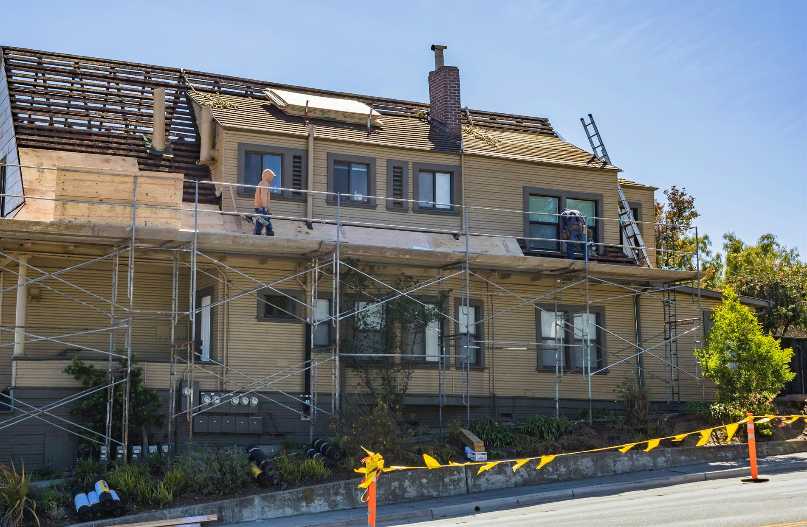
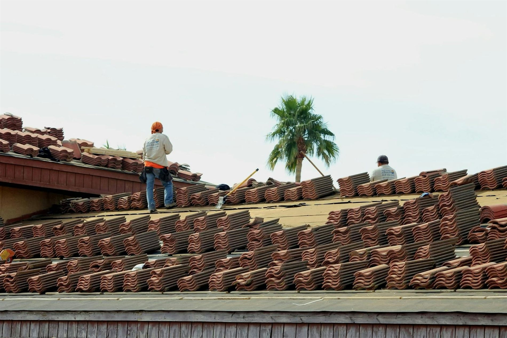
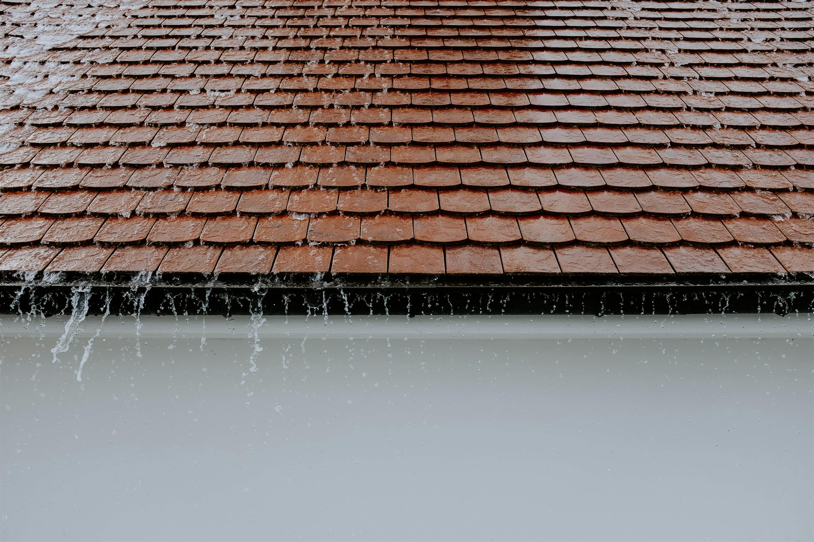
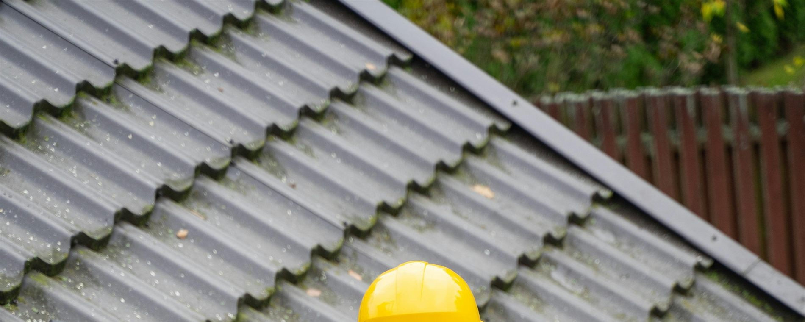
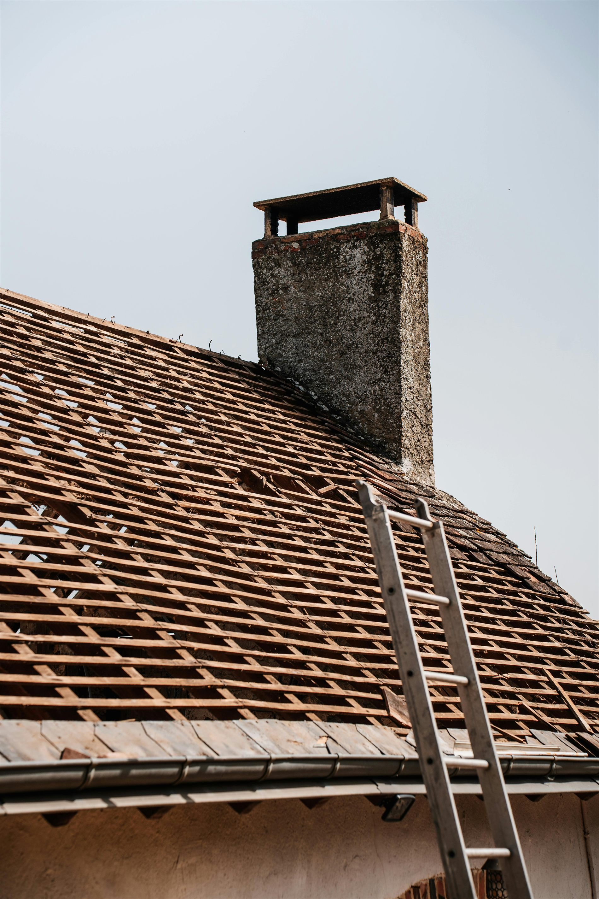
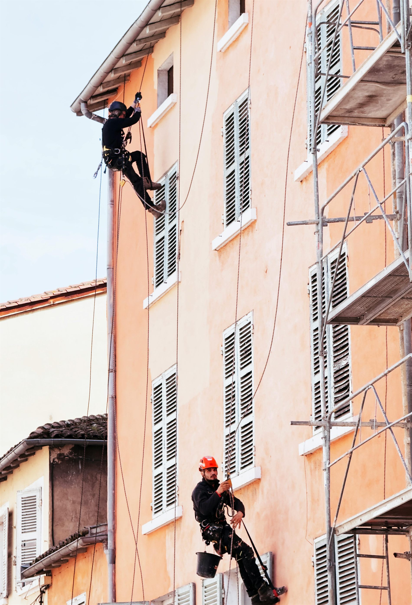
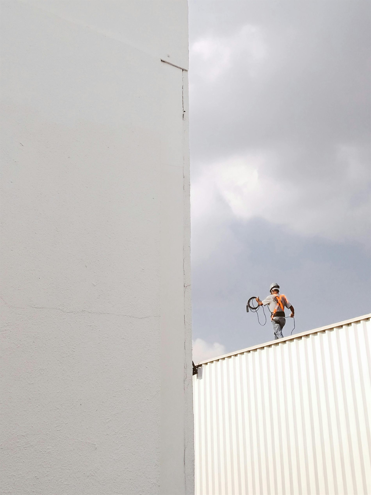
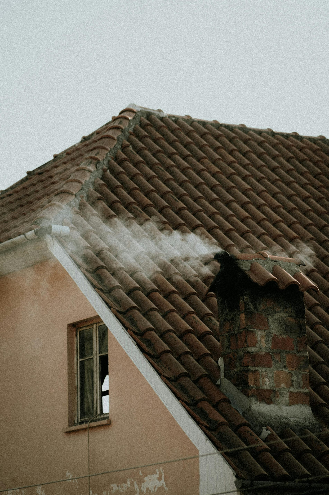
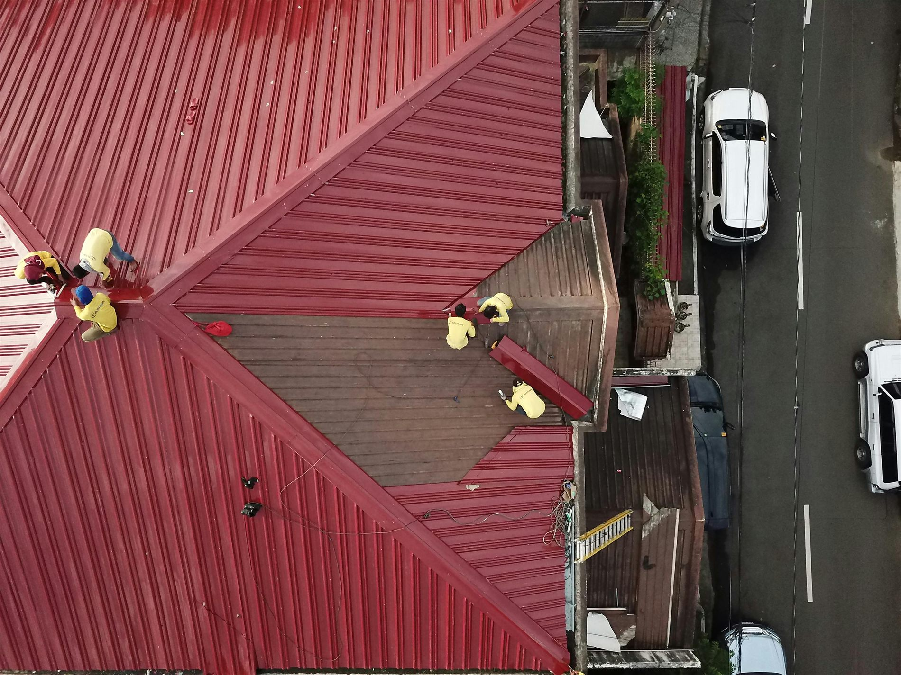

14+
ans d'expérience en couverture
Entreprise artisanale de couverture depuis 2012
Réfection, dépannage, zinguerie et entretien pour maisons individuelles et petits bâtiments. Nous privilégions un diagnostic clair, une exécution propre et des finitions durables pour protéger votre habitation dans le temps.
14+
ans d'expérience en couverture
520
toitures rénovées, réparées ou entretenues
4.9/5
note moyenne vérifiée
98%
interventions livrées dans les délais annoncés
Nos services toiture
Nos interventions suivent une méthode claire : analyse de l'existant, préconisations adaptées au bâtiment, exécution maîtrisée et vérification finale. Vous avancez avec des choix techniques justifiés et un budget lisible.
Dépose de la couverture existante, reprise du support et pose d'un système neuf adapté à votre bâti.
Détection précise des infiltrations, correction des causes et contrôle d'étanchéité en fin d'intervention.
Façonnage et reprise des noues, rives, solins et habillages zinc pour sécuriser les jonctions sensibles.
Nettoyage raisonné, traitement antimousse et protection hydrofuge selon le matériau de couverture.
Installation ou remplacement des gouttières et descentes avec réglage précis des pentes d'évacuation.
Isolation des combles ou rampants pour améliorer le confort thermique et réduire les pertes énergétiques.
Mise hors d'eau d'urgence, sécurisation du site puis réparation définitive après diagnostic.
Visites planifiées et rapport photo pour anticiper les désordres avant qu'ils ne deviennent coûteux.

Diagnostic en 3 temps
Inspection, priorités, plan de travaux chiffréÀ propos
DEMOTOITURE accompagne les particuliers, syndics et gestionnaires qui attendent une intervention lisible et fiable. Nos équipes interviennent avec EPI, procédures de sécurité et pilotage de chantier précis, du premier constat à la réception finale.
48h
pour recevoir un devis détaillé
24/7
astreinte météo lors d'épisodes critiques
10 ans
garantie décennale sur travaux couverts
Réalisations récentes
Une sélection de chantiers en rénovation, dépannage, zinguerie et entretien. Chaque réalisation montre notre méthode : préparation soignée, exécution maîtrisée et finitions propres.









Avis clients
Nos clients soulignent la clarté du suivi, la qualité des finitions et le respect des délais annoncés.
"Diagnostic détaillé avec photos, puis intervention parfaitement organisée. Le résultat est impeccable."
"Équipe ponctuelle, chantier nettoyé chaque soir et vraie qualité de finition sur les gouttières et les rives."
"Après un épisode orageux, la mise en sécurité a été immédiate. La réparation définitive a été réalisée sans mauvaise surprise."
"Devis clair, délais respectés et finitions soignées. Une entreprise sérieuse et transparente."
Contact / Devis
Décrivez votre besoin : rénovation, fuite, entretien, zinguerie ou isolation. Nous revenons vers vous avec un diagnostic utile, un phasage cohérent et un devis détaillé.